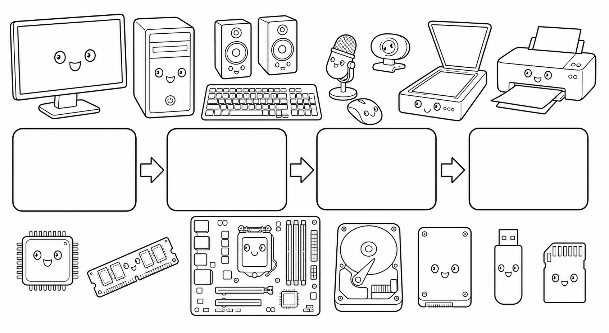
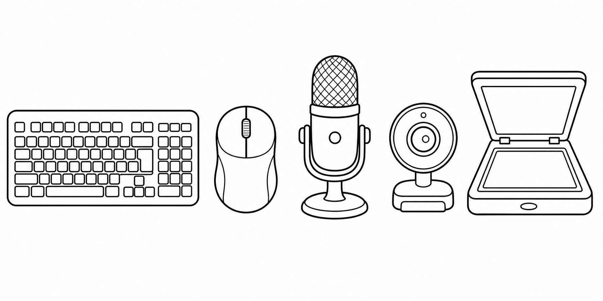
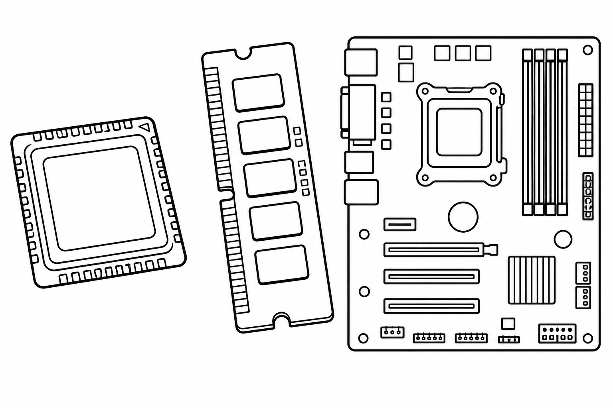
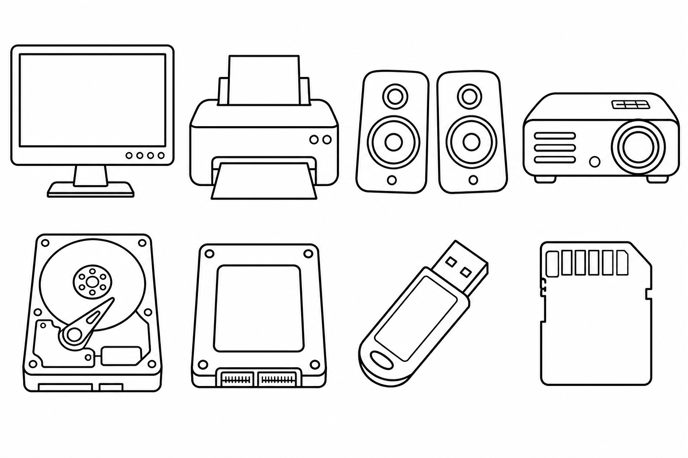
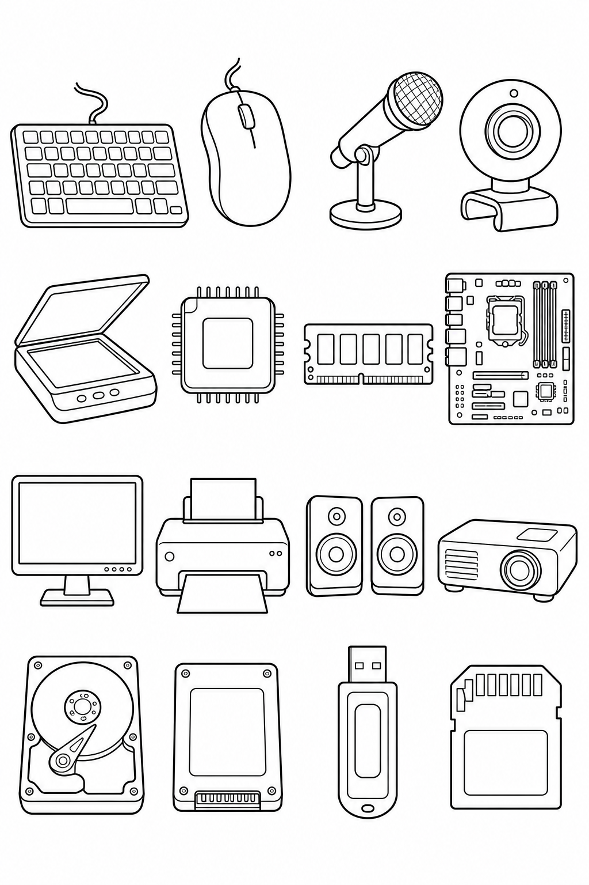

เฉลยครู

1 รับข้อมูล (Input)
นำคำสั่ง เสียง ภาพ หรือเอกสารเข้าสู่คอมพิวเตอร์
จำง่าย: ส่งข้อมูล “เข้า”
2 ประมวลผล (Process)
CPU คำนวณและควบคุม โดยมี RAM ช่วยพักข้อมูลที่กำลังใช้
จำง่าย: คิดและทำงาน
3 แสดงผล (Output)
นำผลลัพธ์ออกมาให้เราเห็น ได้ยิน หรือได้เป็นกระดาษ
จำง่าย: บอกผล “ออก”
4 จัดเก็บ (Storage)
บันทึกไฟล์ไว้ใช้ภายหลัง แม้ปิดเครื่องแล้วข้อมูลยังอยู่
จำง่าย: เก็บไว้ใช้ต่อ
เส้นทางตัวอย่าง: พิมพ์ด้วยแป้นพิมพ์ → CPU ประมวลผล → เห็นข้อความบนจอภาพ → บันทึกลง SSD หรือแฟลชไดรฟ์
เฉลยครู
1
อุปกรณ์รับข้อมูล (Input Devices)

แป้นพิมพ์ Keyboard
รับ: ตัวอักษร ตัวเลข คำสั่ง
ใช้: พิมพ์รายงาน
เมาส์ Mouse
รับ: การชี้ คลิก ลาก
ใช้: เลือกคำสั่ง
ไมโครโฟน Microphone
รับ: เสียงพูดและเสียงรอบตัว
ใช้: สนทนาออนไลน์
เว็บแคม Webcam
รับ: ภาพนิ่งและภาพเคลื่อนไหว
ใช้: ส่งภาพผู้เรียน
สแกนเนอร์ Scanner
รับ: ภาพหรือเอกสารบนกระดาษ
ใช้: เปลี่ยนเป็นไฟล์
2
อุปกรณ์ประมวลผล (Processing Components)

CPU Central Processing Unit
คำนวณ ตัดสินใจ และควบคุมการทำงาน เปรียบเหมือนสมองของคอมพิวเตอร์
RAM Random Access Memory
พักข้อมูลและโปรแกรมที่กำลังใช้ชั่วคราว เมื่อปิดเครื่องข้อมูลใน RAM จะหายไป
เมนบอร์ด Motherboard
แผงวงจรหลักที่เชื่อม CPU, RAM และอุปกรณ์ต่าง ๆ ให้สื่อสารกัน
ข้อควรรู้: CPU เป็นชิ้นส่วนที่ติดตั้งอยู่ภายในหน่วยระบบ กล่องหน่วยระบบทั้งกล่องไม่ใช่ CPU
เฉลยครู

3
อุปกรณ์แสดงผล (Output Devices)
จอภาพ Monitor
แสดงภาพ ข้อความ และวิดีโอบนหน้าจอ
เครื่องพิมพ์ Printer
แสดงผลเป็นข้อความหรือภาพบนกระดาษ
ลำโพง Speakers
แสดงผลเสียง เพลง และเสียงพูด
เครื่องฉายภาพ Projector
ฉายภาพจากคอมพิวเตอร์ให้มีขนาดใหญ่
4
อุปกรณ์จัดเก็บข้อมูล (Storage Devices)
ฮาร์ดดิสก์ HDD
เก็บข้อมูลด้วยจานแม่เหล็ก ความจุมาก
SSD Solid-State Drive
เก็บข้อมูลด้วยชิป ทำงานเร็ว ไม่มีจานหมุน
แฟลชไดรฟ์ USB Drive
อุปกรณ์พกพา ใช้ย้ายไฟล์ระหว่างเครื่อง
การ์ดหน่วยความจำ Memory Card
การ์ดขนาดเล็ก ใช้กับกล้องและอุปกรณ์พกพา
ต่างกันอย่างไร? อุปกรณ์แสดงผลช่วยให้เราเห็นหรือได้ยินผลลัพธ์ ส่วนอุปกรณ์จัดเก็บบันทึกไฟล์ไว้ใช้ภายหลัง เมื่อปิดเครื่องข้อมูลยังคงอยู่ แต่ข้อมูลชั่วคราวใน RAM จะหายไป
เฉลยครู
ชื่อ ชั้น เลขที่

1แป้นพิมพ์
2เมาส์
3ไมโครโฟน
4เว็บแคม
5สแกนเนอร์
6CPU
7RAM
8เมนบอร์ด
9จอภาพ
10เครื่องพิมพ์
11ลำโพง
12เครื่องฉายภาพ
13ฮาร์ดดิสก์
14SSD
15แฟลชไดรฟ์
16การ์ดหน่วยความจำ
ระบายสีตามรหัสของนักเรียน: รับข้อมูล = สีฟ้า · ประมวลผล = สีส้ม · แสดงผล = สีเขียว · จัดเก็บ = สีม่วง
○ วงกลมอุปกรณ์ที่ใช้เรียนออนไลน์ ☆ ใส่ดาวที่อุปกรณ์พกพาได้
เฉลยครู
ชื่อ ชั้น เลขที่
1) ลากเส้นจับคู่ชื่ออุปกรณ์กับหน้าที่
ก. เว็บแคม
พักข้อมูลที่กำลังใช้ชั่วคราว (ค)
ข. เครื่องพิมพ์
รับภาพผู้เรียนเข้าสู่คอมพิวเตอร์ (ก)
ค. RAM
แสดงผลลงบนกระดาษ (ข)
ง. แฟลชไดรฟ์
พกไฟล์ไปใช้กับเครื่องอื่น (ง)
2) เติมชื่ออุปกรณ์ให้เหมาะกับสถานการณ์
1. พิมพ์รายงาน ใช้ แป้นพิมพ์
2. สนทนาให้ครูได้ยินเสียง ใช้ ไมโครโฟน
3. เปลี่ยนภาพบนกระดาษเป็นไฟล์ ใช้ สแกนเนอร์
4. ฉายงานให้เพื่อนทั้งห้องดู ใช้ เครื่องฉายภาพ
5. เก็บไฟล์ไว้ในเครื่องอย่างรวดเร็ว ใช้ SSD
6. เชื่อมส่วนประกอบภายในให้สื่อสารกัน ใช้ เมนบอร์ด
3) เลือกอุปกรณ์ให้เหมาะกับภารกิจ
เรียนออนไลน์: □ จอภาพ □ เว็บแคม □ ไมโครโฟน □ เครื่องพิมพ์
จอภาพ เว็บแคม ไมโครโฟน
นำเสนองานหน้าชั้น: □ เมาส์ □ เครื่องฉายภาพ □ ลำโพง □ สแกนเนอร์
เครื่องฉายภาพ และลำโพงเมื่อมีเสียง
4) เปรียบเทียบอุปกรณ์ที่มักสับสน
จอภาพกับเครื่องพิมพ์ต่างกันอย่างไร?
จอภาพแสดงผลบนหน้าจอ ส่วนเครื่องพิมพ์แสดงผลบนกระดาษ
RAM กับอุปกรณ์จัดเก็บต่างกันอย่างไร?
RAM พักข้อมูลชั่วคราวและข้อมูลหายเมื่อปิดเครื่อง แต่อุปกรณ์จัดเก็บบันทึกไฟล์ไว้ได้
5) อธิบายเหตุผล
ถ้าต้องทำรายงาน ส่งให้ครู และเก็บไฟล์ไว้แก้ภายหลัง นักเรียนควรใช้อุปกรณ์ใดบ้าง เพราะเหตุใด?
ตัวอย่าง: ใช้แป้นพิมพ์พิมพ์ จอภาพดูงาน CPU ประมวลผล อินเทอร์เน็ตส่งงาน และ SSD หรือแฟลชไดรฟ์เก็บไฟล์